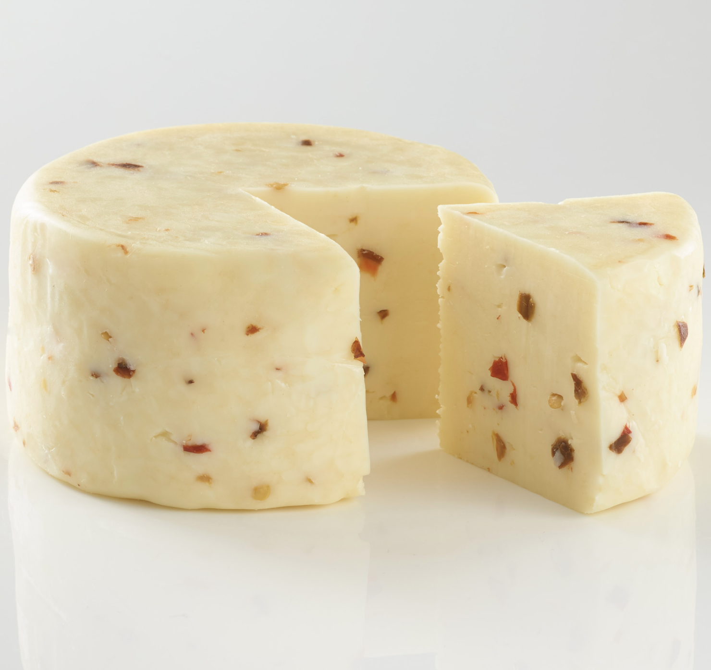

International Breads


▲
Baguette
A baguette is a long, thin loaf of French bread.
Although the word "baguette" was not used to refer to a type of bread until 1920, the word itself simply means "wand", "baton" or "stick".
According to a legend, it was Napoleon who asked for the baguette to have a long shape. This made it easier for his soldiers to carry their bread around down their pants while in the battlefield.
包子（Baozi）
Baozi or bao is a Chinese bun with a filling of meat or vegetables, not to be confused with 馒头（mantou）which is also a type of Chinese steamed bun but without any filling.
According to legend, a Chinese general needed to lead his army across a raging river but the people on the other side of the river demanded him to seve the heads of fifty of his men. Instead, the general decided to use large, meat-filled balls of dough as a replacement.
Challah
Challah, plural: challot or challos is a special bread in Jewish cuisine, usually braided and typically eaten on ceremonial occasions such as Sabbath and major Jewish holidays.
Braided challah bread are the most common because the braids look like arms intertwined, symbolize love. Poppy and sesame seeds sprinkled on the bread also symbolize the manna that fell from heaven.
ənǧära እንጀራ (Injera)
Injera is a sourdough-risen flatbread is the national dish of Ethiopia and Eritrea and often both the serving platter and utensil for a meal.
Pão de queijo
Pão de queijo or Brazilian cheese bread is a small, baked cheese roll, a popular snack and breakfast food in Brazil.
Pão de queijo originated from African slaves like many other Brazilian foods. Slaves would soak and peel the cassava root and make bread rolls from it.
नान (Naan)
Naan is leavened, tandoor-baked flatbread native to India and the name comes from the Persian word, non, for bread. It resembles pita bread but unlike pita, it has yogurt, milk, sometimes eggs or butter which makes it softer than pita bread.
▼
Bread & Cheese
~ hoover any cheese or bread to find the perfect paring~
